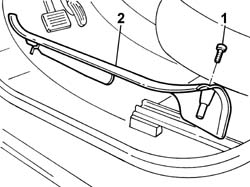
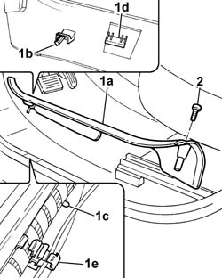

7040L40 front compartment scuff strip - r r
- Path
- Procedures > 70 FITTINGS > 7040 BODYSHELL INTERIOR TRIMS AND FITTINGS > 7040L cabin floor covering > 7040L40 front compartment scuff strip - r r
- Kind
- repair procedure (removal / refitting; the operation number is the code)
- Applies to
- all engines; all production periods
- Interactive page
- https://sloeber94.github.io/elrnDB-fPnd/en/#/2753218
Applies to: all engines; all production periods
 Removing
Removing
 Refitting
Refitting7040L42 sill plate connection of one front door (1), lh or rh - r r
1. Undo retaining bolts
2. Release the running borad from the fastening clips and remove it.

Applies to: all engines; all production periods
Refitting
Removing1. Place the running board (1a) in position fitting the pin (1b) in the special opening (1c) and the tabs (1d) in the special clips (1e).
2. Tighten the retaining bolt.

Applies to: all engines; all production periods
7040L42 sill plate connection of one front door (1), lh or rh - r r
Topics linked from this page (1)
Topics that link to this page (16)
- 5505A90 rear wiring bundle - r r or replace
- 5570T20 radio aerial amplifier - r r
- 5580C50 (HEAD- BAG MODULE ) (one), left or right - R.R.
- 7005A34 front side door compartment seal r r
- 7010A24 rear side door hinges - repair or replace with door removed
- 7015A24 tailgate hinges - repair or replace with tailgate removed
- 7030B24 sliding roof blind,front or rear - r r
- 7030B47 GUIDE device for sliding roof movement control cables - R.R .
- 7030B50 sun roof guide , one , lh or rh - r r
- 7030B70 sun-roof control switch - r+r
- 7030B74 sun-roof wiring harness - r r or replace
- 7040H10 roof panel lining - r r
- 7040H16 roof panel lining - r r
- 7040H36 central trim lower element - r r
- 7040H38 central pillar upper element - r r
- 7065A12 front seat belt (one), lh or rh, with pretensioner on wheel - r r